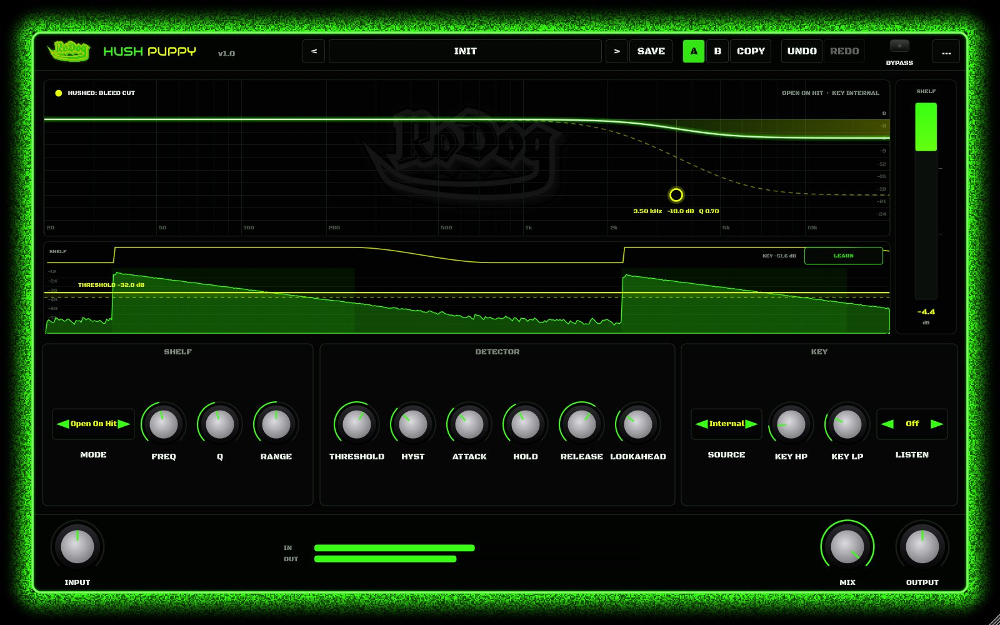
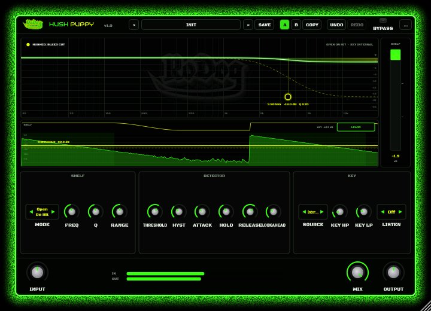
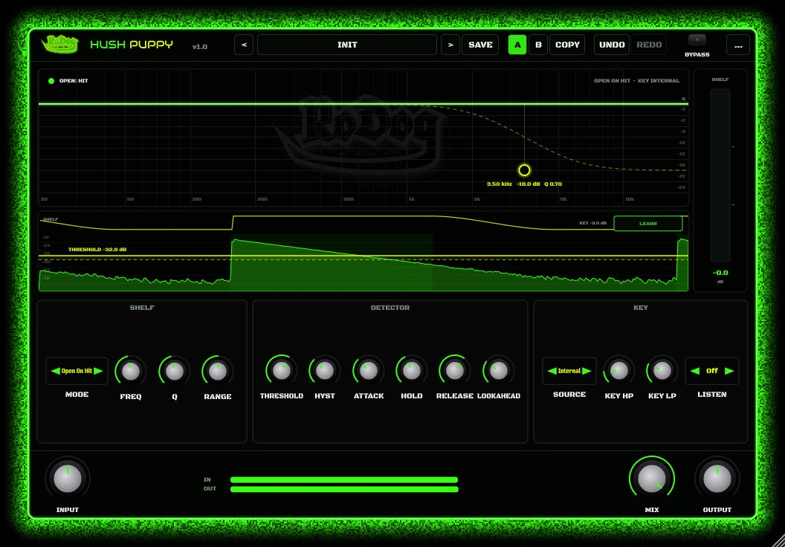
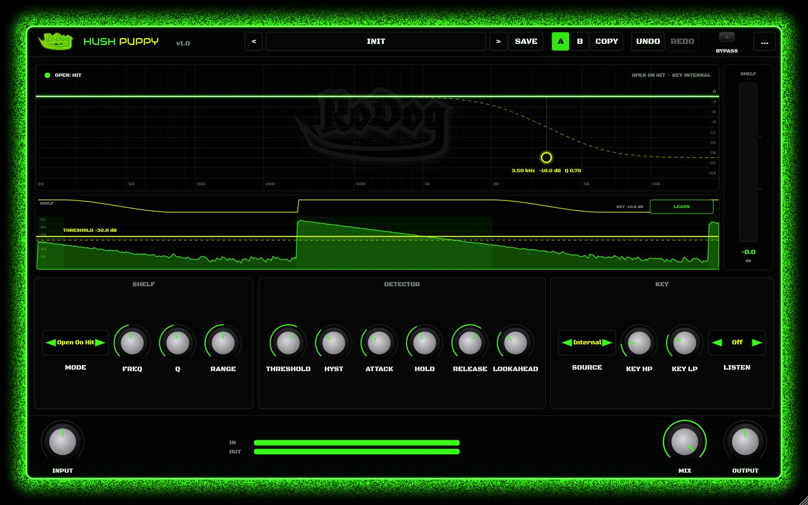
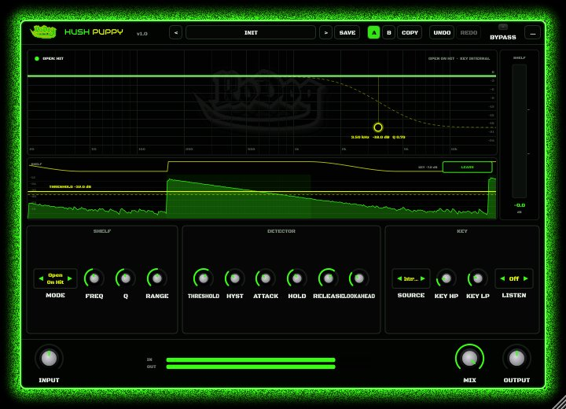
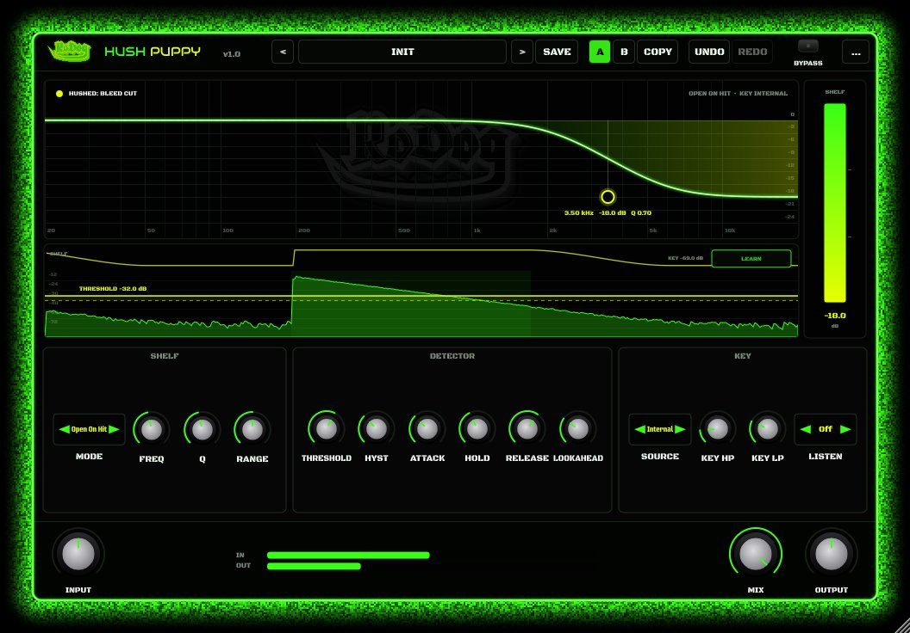
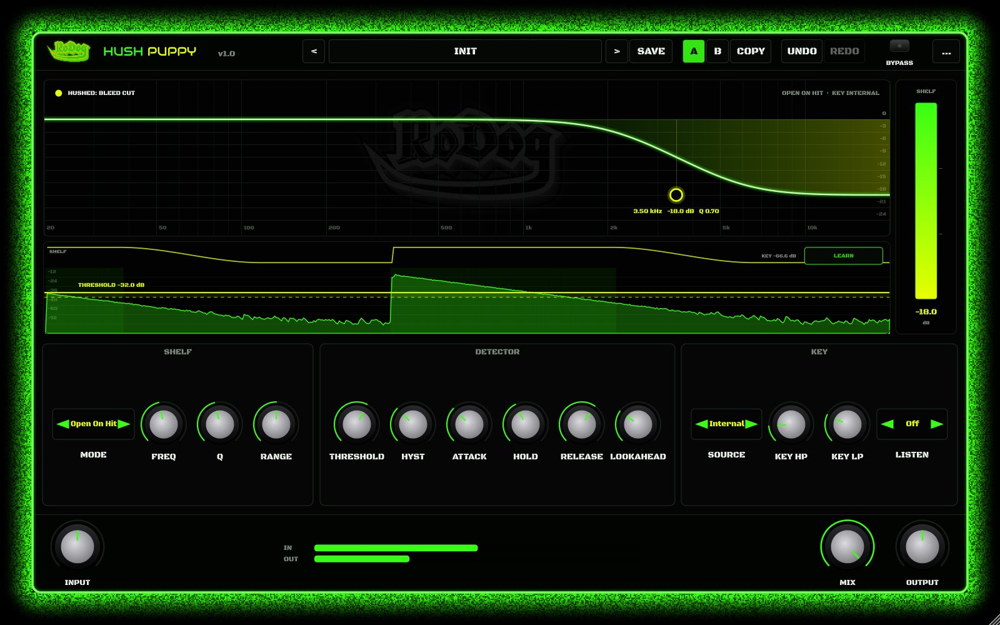
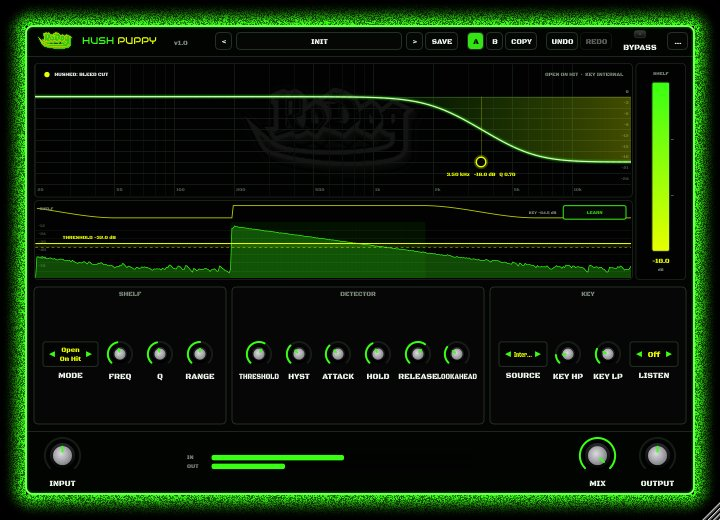
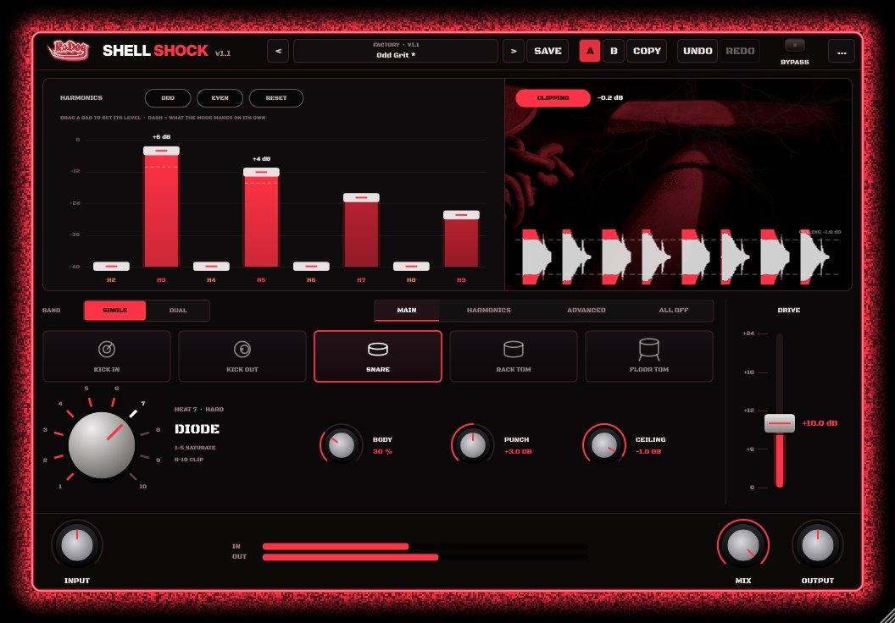
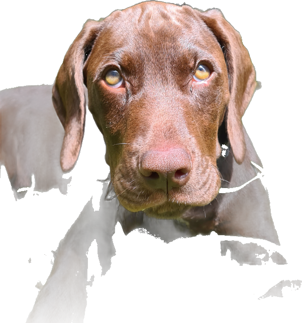

DD-HushPuppy-GateDucker
A dynamic high shelf that takes cymbal and hi-hat bleed off your drum mics and leaves the hits alone.
Installs through the The Kennel. VST3 & AU, macOS & Windows.
Features
One job, done well
Between hits the shelf drops and hushes the cymbal bleed. Every hit lifts it back to flat, so the stick and shell come through untouched.
Lookahead
Up to 10 ms, so the shelf is already open when the stick lands.

LEARN
Listens to six seconds of the drum and sets the threshold between the bleed and the hits for you.

Key and listen
Use the track or a side chain as the key, filter it, and listen to the key or to just what's removed.

Pictures





More from the DrumDog series

Drum Dog
Everything a multitrack drum kit needs before the mix: level, align and trigger, on every drum track. Soon splitting into three DrumDog plugins: Dog Align, Dog Leveller and Dog Midi.

DD-BigDog-Clipper
Big, fat drums: a shell clipper for kick, snare and toms, from gentle saturation to hard clipping. Formerly Shell Shock.

DD-DogAlign-Aligner
Lines every drum mic up with one master mic, in time and in phase: TIME, POLARITY, per-band ROTATE and AUTO ALIGN.
